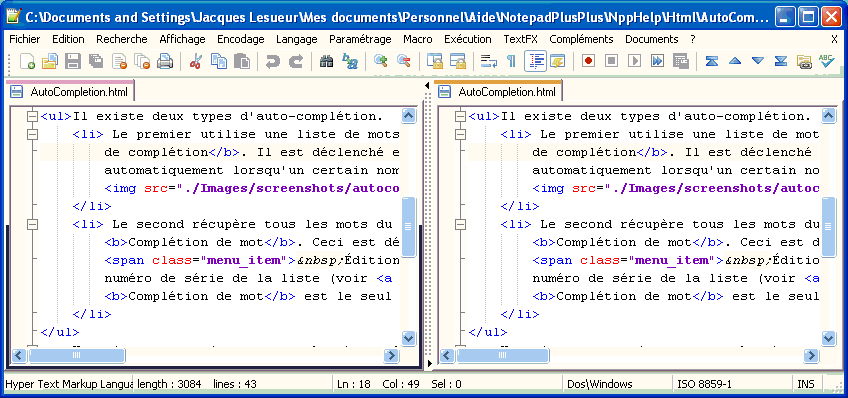

. Pour verrouiller le défilement vertical,
sélectionnez ou appuyez sur le bouton
. Pour verrouiller le défilement vertical,
sélectionnez ou appuyez sur le bouton
 .
.
| Précédent: Cacher des lignes | Affichage | Suivant: Barre Système |

Vous pouvez activer une fenêtre d'édition secondaire dans Notepad++ pour être en mesure d'afficher deux fois le même document (voire deux documents différents). Si vous utilisez cette possibilité avec le même document, vous pouvez rapidement comparer les documents ou faire des changements à deux endroits en même temps sans avoir à faire défiler ou à poser des signets. Pour utiliser l'option de Vue Multiple, activer le document que vous souhaitez afficher dans l'autre vue.
Vous pouvez également accéder à ces commandes par un clic droit sur l'onglet d'un document et en sélectionnant la commande dans le menu contextuel. Notez que ces options sont également disponibles en faisant glisser un onglet dans un champ d'édition, avec la touche Ctrl enfoncée pour le clonage et non enfoncée pour un déplacement.
Une fois que vous avez votre Vue Multiple activée, vous pouvez contrôler sa mise en page. Vous pouvez faire glisser le séparateur en utilisant votre souris, ou cliquez sur les petites flèches en haut et en bas complète le déplacement vers la gauche ou la droite. Un clic droit sur le diviseur affiche un menu contextuel vous permettant de faire pivoter la disposition d'un quart de tour.
Bien que vous puissiez afficher deux documents en même temps, un seul peut être actif (avoir le focus). Vous pouvez déterminer la vue active par la barre d'onglets si vous avez activé les lignes colorées des onglets (voir la barre d'onglets du menu Préférences ). Par défaut, l'onglet actif de la vue active porte une barre de couleur distincte de celle de l'autre onglet «actif». En outre, seule la vue active peut avoir le point d'insertion. Vous pouvez changer la vue active en .
La vue active détermine Si vous avez le même document ouvert dans deux vue, ils partagent certaines propriétés, mais certaines d'entres elles peuvent être modifiées indépendamment:
Si vous ouvrez un nouveau document ou fichier, il se fera dans la vue actuellement active. En outre, la fermeture, y compris par déplacement du dernir onglet, du dernier document d'une vue fermera cette vue.
Pour faciliter la comparaison de deux documents, vous pouvez activer le verrouillage du défilement en mode vue Multiple. Si ce verrouillage est activé, le défilement d'une vue fera défiler automatiquement l'autre. Le verrou va tenter de garder la position actuelle. Cela signifie que si un point de vue défile 5 lignes plus bas que l'autre, le défilement vertical verrouillera cette distance à moins que cela ne soit pas possible. Dès qu'il le pourra, il retrouvera le bon décalage.
Pour permettre le verrouillage du défilement horizontal, sélectionnez
ou appuyez sur le bouton
. Pour verrouiller le défilement vertical,
sélectionnez ou appuyez sur le bouton
.